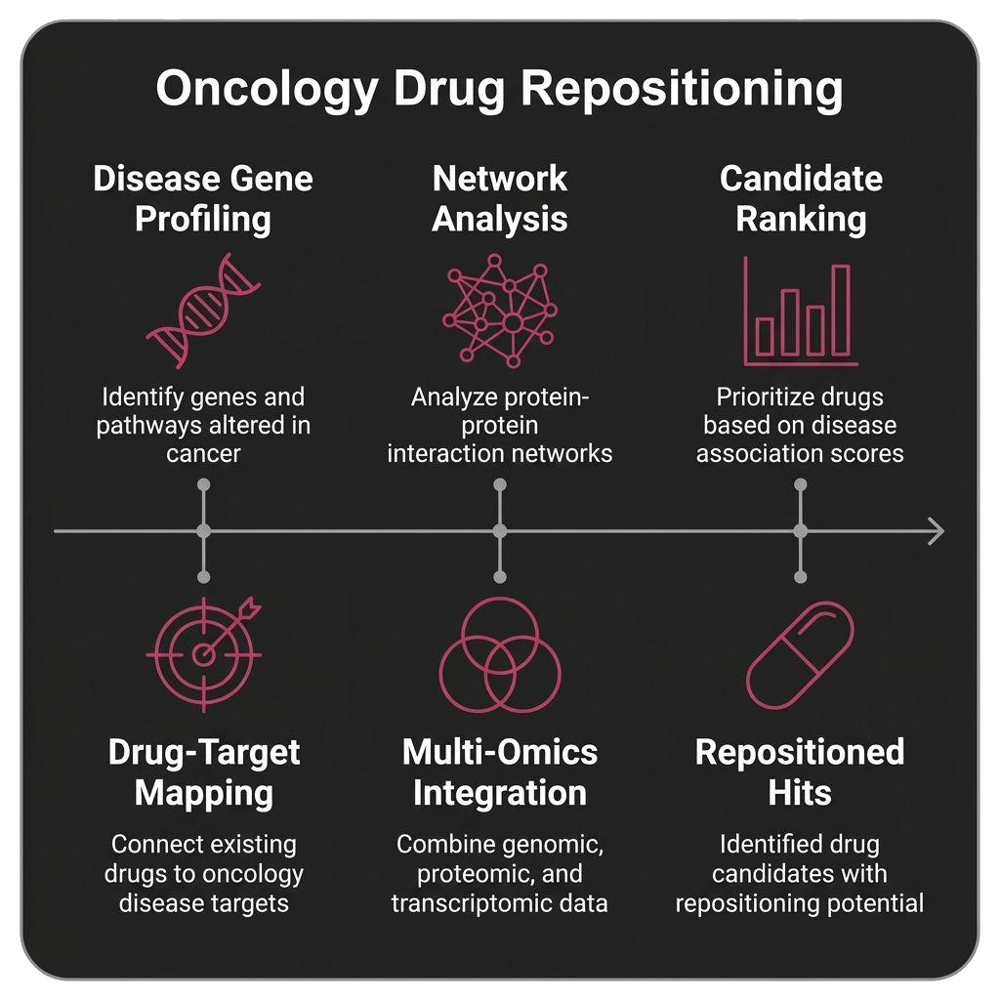
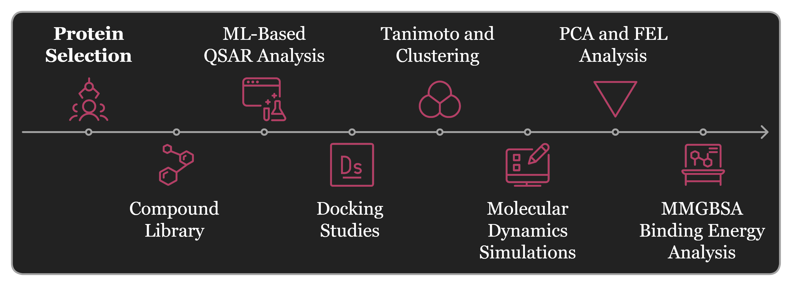
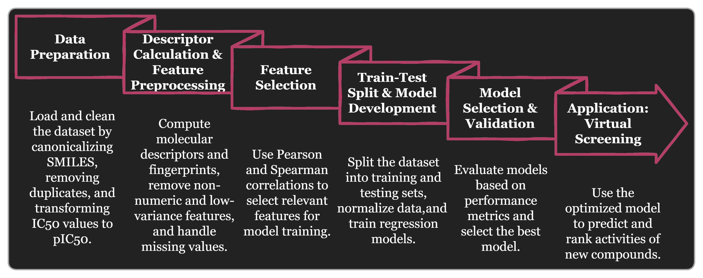
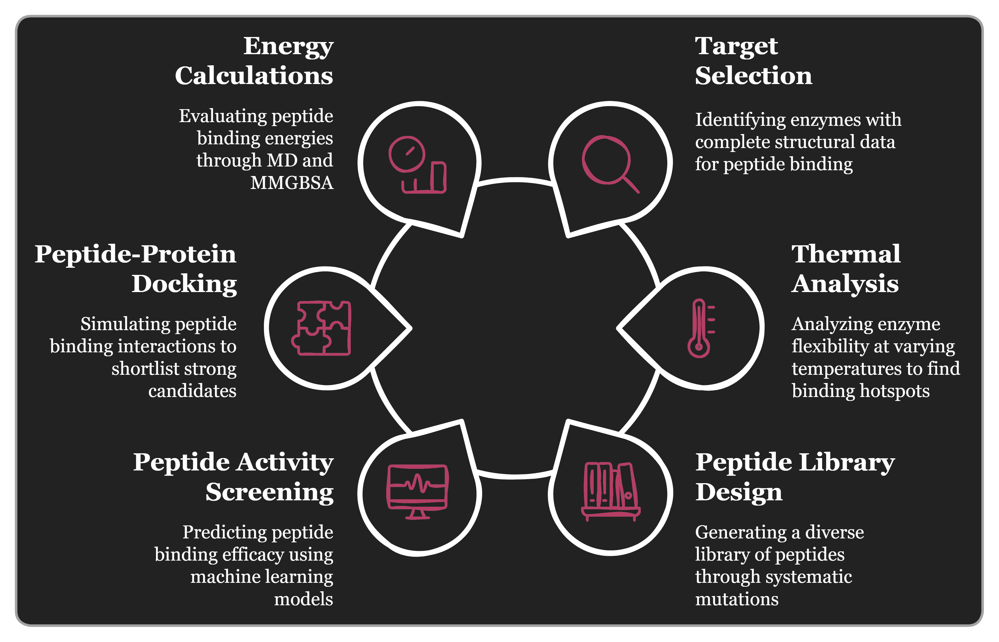

Hi, I am Vinod,
Computational Biologist.
I am a CSIR-NET qualified researcher and Computational Biologist with a focus on AI-driven drug discovery, structural biology, and bioinformatics. My work combines molecular modeling, high-throughput virtual screening, predictive modeling, and reproducible workflow automation to turn multi-omics data into practical biopharmaceutical R&D insights.
03+
Years
Experience
03
Publications
10k+
Molecules
Screened
About Me
Who am ICSIR-NET Qualified Computational Biologist
I specialize in AI-driven drug discovery, structural biology, and multi-omics analysis. My experience spans protein-ligand docking, free energy calculations, homology modeling, RNA-Seq analysis, TCGA-based clinical outcome prediction, and network pharmacology. I also build reproducible, containerized pipelines in Python, Bash, Docker, and Snakemake to speed up analysis and reduce manual effort.
Technologies I've been working with:
Machine Learning & AI
- Random Forest, SVM
- Predictive QSAR Modeling
- Clinical Outcome Prediction
- Network Pharmacology
Computational Chemistry & Structural Biology
- HTVS, Hit-to-Lead Optimization
- Protein-Ligand Docking
- Free Energy Calculations
- Homology Modeling
Bioinformatics & Multi-Omics
- RNA-Seq Pipelines (QC, Alignment, DE)
- TCGA Data Analysis
- GO & KEGG Enrichment
- Multi-Omics Interpretation
Tools, Programming & Infrastructure
- Python, Bash, Linux/Unix
- GROMACS, AMBER
- AlphaFold, Rosetta, AutoDock
- Schrödinger, PyMOL, Chimera, Docker, Snakemake
Qualification
Experience & EducationProfessional Experience
Computational Immunologist
Katamaran Industries Pvt. Ltd. | Mar 2026 – Present
Spearhead the computational engineering of T-Cell Engagers using structural modeling and protein interaction analysis. Support oncology drug repositioning by integrating molecular modeling and multi-omics data.Bioinformatics Researcher
bioinfoLink | Jan 2025 – Feb 2026
Engineered a fully reproducible, containerized RNA-Seq pipeline using Snakemake, reducing analyst hands-on time by 80%. Applied Random Forest and SVM models to TCGA multi-omics data for clinical outcome prediction.Bioinformatician & Research Associate
Growdea Technologies Pvt. Ltd. | Apr 2023 – Dec 2024
Deployed machine learning for molecular interaction prediction, developed QSAR models and automated GROMACS MD workflows, and executed HTVS against a novel viral target.Project Intern
Indian Institute of Science (IISc), Bengaluru | Jan 2022 – Jun 2022
Designed and executed RNA-Seq workflows covering QC, alignment, and differential expression analysis, followed by GO and KEGG pathway enrichment.Education
Master of Science in Bioinformatics
Bharathiar University, Coimbatore | 2020 – 2022
Thesis: In-silico approach to identify novel drug targets against stress granules for cancer treatmentBachelor of Science in Biotechnology
Mohanlal Sukhadia University, Udaipur | 2017 – 2020
Undergraduate training in biotechnology and molecular life sciences.Awards & Certifications
CSIR-UGC NET (Life Sciences)
All India Rank 46 | Sep 2025
Qualified for lectureship and Ph.D. admissions nationally.Genomic Data Science
Johns Hopkins University | Dec 2024
Student Project Scheme Fellowship
Tamil Nadu State Council for Science & Technology | Nov 2022
Computer-Aided Drug Design
IIT Madras | 2021
Human Molecular Genetics
IIT Kanpur | 2021
Publications
Research & ContributionsComputational analysis of Non-synonymous SNP effects on human PLVAP gene structure and function
Journal of Applied Genetics, 2025.
Machine Learning Optimization Approach to Design Multi-Epitope Marburg Vaccine Construct
Biosciences Biotechnology Research Asia, 2024; 21(4).
Computational Analysis to Identify Novel Drug Targets for Esophageal Cancer
Medinformatics, 2024.
Projects
Selected work highlights
Oncology Drug Repositioning
Integrated molecular modeling and multi-omics data to support drug repositioning strategies and prioritize new therapeutic indications.

High-Throughput Virtual Screening
Executed a screening campaign of 10,000+ small molecules against a viral target using AutoDock, then prioritized the top candidates for validation.

QSAR & Lead Optimization
Developed predictive QSAR models and machine learning workflows to support hit-to-lead optimization and rank promising compounds.

Automated MD Workflows
Built automated GROMACS molecular dynamics workflows to reduce setup time and analyze binding energetics and thermodynamic stability.
Let's Collaborate on Your Next Project
Feel free to reach out if you are interested in discussing collaborations in computational biology, drug discovery, or bioinformatics. I am open to research partnerships, consulting, and project opportunities.